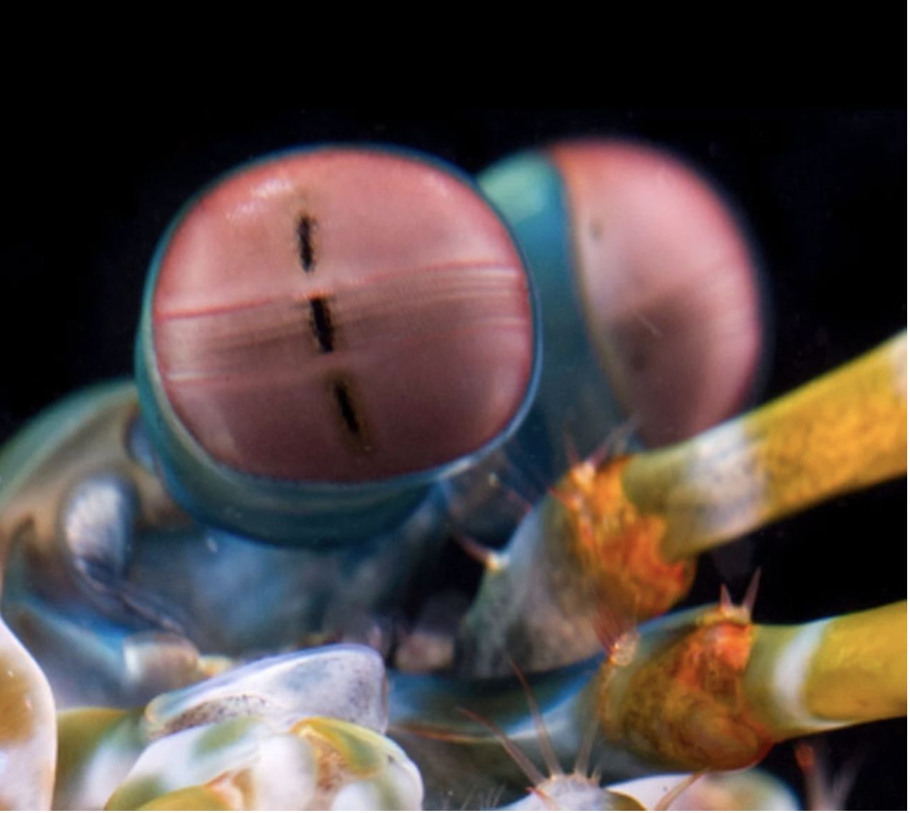

Os olhos mais incríveis da natureza ficaram um pouco mais estranhos
não é um mantis nem um camarão, mas um parente próximo de caranguejos e lagostas
É um olho composto, feito de milhares de pequenas unidades que detectam a luz de forma independente.
| Reino: | Animalia |
|---|---|
| Filo: | Arthropoda |
| Subfilo: | Crustacea |
| Classe: | Malacostraca |
| Subclasse: | Hoplocarida |
| Ordem: |
Stomatopoda Latreille, 1817 |
| Nome científico: | Stomatopoda |